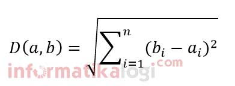

K-Means Clustering pada Data Iris¶
A. Definisi K-Means¶
K-Means adalah salah satu algoritma clustering atau metode pengelompokan data dengan sistem partisi dan menerima masukan data tanpa label kelas. Dimana data dikelompokkan ke dalam beberapa kelompok sehingga data dalam satu kelompok (cluster) memiliki karakteristik yang sama satu sama lainnya dan mempunyai karakteristik yang berbeda dengan data yang berada di dalam kelompok (cluster) yang lain. Pada setiap cluster terdapat titik pusat (centroid) yang merepresentasikan cluster tersebut. Algoritma ini mengelompokkan data berdasarkan kemiripan dari fiturnya. Ciri khas dari algortima ini adalah mendefinisikan terlebih dahulu berapa jumlah cluster yang akan didapatkan dan berapa jumlah iterasi untuk algoritma ini.
B. Konsep K-Means¶
Metode K-Means Clustering berusaha mengelompokkan data yang ada ke dalam beberapa kelompok, dimana data dalam satu kelompok mempunyai karakteristik yang sama satu sama lainnya dan mempunyai karakteristik yang berbeda dengan data yang ada di dalam kelompok yang lain.
Dengan kata lain, metode K-Means Clustering bertujuan untuk meminimalisasikan objective function yang diset dalam proses clustering dengan cara meminimalkan variasi antar data yang ada di dalam suatu cluster dan memaksimalkan variasi dengan data yang ada di cluster lainnya.

Data clustering menggunakan metode K-Means Clustering ini secara umum dilakukan dengan algoritma dasar sebagai berikut:
- Tentukan jumlah cluster
- Alokasikan data ke dalam cluster secara random
- Hitung centroid/rata-rata dari data yang ada di masing-masing cluster
- Alokasikan masing-masing data ke centroid/rata-rata terdekat
- Kembali ke Step 3, apabila masih ada data yang berpindah cluster atau apabila perubahan nilai centroid, ada yang di atas nilai threshold yang ditentukan atau apabila perubahan nilai pada objective function yang digunakan di atas nilai threshold yang ditentukan
C. Kelebihan dan Kekurangan¶
a) Kelebihan¶
- Mudah untuk diimplementasikan dan dijalankan
- Waktu yang dibutuhkan untuk menjalankan pembelajaran ini relatif cepat
- Mudah untuk diadaptasi
- Umum digunakan
b) kekurangan¶
-
pengelompokan data yang dihasilkan berbeda-beda karena k buah titik (titik pusat) diinisialisasi secara random. Jika nilai random untuk inisialisasi kurang baik, maka pengelompokkan yang dihasilkan juga kurang optimal.
-
Terdapat banyak dimensi dalam mencari jarak antar titik jika . Seperti jika mencari jarak antar titik jika terdapat 20 dimensi.
-
Membutuhkan waktu perhitungan dan pencarian titik terdekat yang lama jika terdapat titik sampel data yang banyak misal satu milyar buah data.
D. Langkah-langkah Clustering K-Means di Excel¶
- Disini saya menggunakan data Iris, tetapi saya hanya mengambil 5 data dari tiap kelas jadi total data yang akan diclustering ada 15 data.
- Menentukan banyaknya cluster yang dibentuk (k) dimana banyaknya cluster harus lebih kecil dari banyaknya data (k<n). Inisialisasi secara acak (random) K titik data sebagai pusat cluster yang disebut centroid
- Menandai masing-masing xi masuk ke masing-masing pusat cluster tertentu dengan cara menghitung jarak xi ke masing-masing pusat cluster (centroid). Setelah itu kelompokkan data sesuai clusternya masing-masing dengan cara memilih data yang memiliki jarak terdekat atau terpendek dengan cluster lainnya. Rumus untuk menghitung distance space dengan menggunakan Euclidiean Distance.

Cara menghitung jaraknya seperti di bawah ini :
- Menghitung jarak pada baris 1 dengan pusat cluster/centroid pertama (c1). Dimana mengambil data IRIS baris pertama di kurangi jumlah centroid pertama (c1) seperti contoh di bawah ini.
D(x1,c1) = √(5.1 – 5.1)² + (3.5 – 3.5)² + (1.4 – 1.4)² + (0.2 – 0.2)²
- Menghitung jarak pada baris 1 dengan pusat cluster/centroid kedua (c2).
D(x1,c2) = √(5.1 – 5.4)² + (3.5 – 3.9)² + (1.4 – 1.7)² + (0.2 – 0.4)²
- Menghitung jarak pada baris 1 dengan pusat cluster/centroid ketiga (c3).
D(x1,c3) = √(5.1 – 5.4)² + (3.5 – 3.7)² + (1.4 – 1.5)² + (0.2 – 0.2)²
- Menghitung jarak pada baris 1 dengan pusat cluster/centroid ketiga (c4).
D(x1,c4) = √(5.1 – 5.7)² + (3.5 – 4.4)² + (1.4 – 1.5)² + (0.2 – 0.4)²
- Berikut ini adalah hasil Iterasi 1 :
- Menentukan pusat cluster baru dengan menghitungnya dengan rata-rata dari anggota cluster. Seperti pada gambar di atas pada cluster 1 anggotanya (1,2,3,4,5,7,8,9,10,12,13,14,18), cluster 2 anggotanya (6,19) dan cluster 3 anggotanya (11,17,20), cluster 4 anggotanya (15,16)
Berikut ini hasil perhitungan centroid baru :
- Ulangi langkah 2 dan 3 sampai tidak ada anggota setiap cluster berubah tempat kelompoknya
Hasil antara iterasi 1 dan iterasi 2 terdapat anggota cluster yang berpindah tempat. Maka akan dilakukan iterasi berikutnya sampai tidak ada cluster yang berubah tempat kelompoknya.
- pada saat ini, centroid tidak berubah di iterasi 4 jadi iterasi sudah selesai. berikut Hasil Centroid baru untuk iterasi 4 :
berikut hasil akhir iterasi :
D. Menghitung Jumlah Cluster
-
Menentukan jarak Intra
Jarak Intra cluster =
Menghitung jarak Intra (x1-c1)² dengan excel :
Begitu juga untuk perhitungan berikutnya sampai (x15-c3)². Hasil dari perhitungannya sebagai berikut :
-
Menentukan jarak Inter
Jarak Inter-cluster = min (zi –zj)2
Menghitung (c1-c2)² dengan excel yaitu dengan mengurangi anggota cluster 1 dan cluster 2 :
-
Menentukan Validity (Jumlah Cluster)
##### E. Menghitung metode Silhouette Coefficient
Daftar anggota tiap Cluster :
E. Langkah-langkah menghitung Silhouette Coefficient :¶
-
Silhouette Coefficient Cluster 1 :
-
Menghitung a(i)
yaitu jarak pada anggota dalam satu cluster yang sama
Menghitung a(i) di excel :

-
Menghitung b(i)
yaitu jarak antara anggota cluster satu dengan cluster yang lain dimana mencari mencari nilai yang paling kecil (minimum)
Menghitung jarak 1 dengan cluster 2:
Menghitung b(i) di excel :
-
Menentukan s(i)
Menghitung s(i) di excel :
Hasil Silhouette Coefficient Cluster 1 :
- Silhouette Coefficient Cluster 2 :
Caranya seperti pada menghitung Silhouette Coefficient Cluster 1. Hasil Silhouette Coefficient Cluster 2:
- Silhouette Coefficient Cluster 3 :
Hasil Silhouette Coefficient cluster 4:
- Silhoutte Coeficient Cluster 4
Hasil Silhouette Coefficient cluster 4:
Referensi¶
- informatika. 2017. Algoritma K-Means Clustering di https://informatikalogi.com/algorithm/k-means/
- Naftali Harris. 2017. Visualizing K-Means Clustering di https://www.naftaliharris.com/blog/visualizing-k-means-clustering/
- Mubaris NK. 2017. K-Means Clustering in Python di https://mubaris.com/posts/kmeans-clustering/